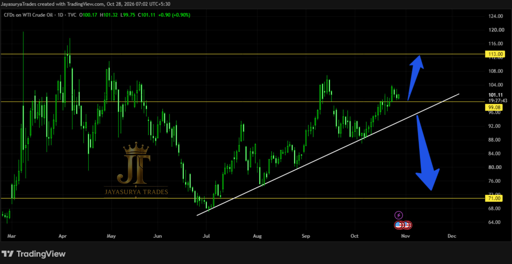

In our last Wednesday Market Focus for Crude Oil, we noted that the market could move upwards to fill the gap present above. That is precisely what has occurred. The market has moved upwards, filled the gap, and broken above it with a confirmed candle close.
Following this upward movement, we are currently waiting to see whether any retracement or rejection candle forms around the 99 price level, which marks the gap's top. Additionally, the market has formed an ascending trendline pattern with nearly four touches. We are monitoring how price behaves at these crucial levels to determine the next potential move.
Recent development: Gap filled and broken upwards with a candle close
Key price levels: 99, 103, 113, and 71
Bullish scenario: Retracement or rejection forming on the 99 price level favoring an upward move toward 113
Alternative scenario: Failure to form a retracement at 99 leading directly to a test of the ascending trendline
Bearish confirmation: A candle close below the ascending trendline to look for sell setups and potential bearish trend formation

Market Structure — Gap Filled and Broken Upwards
The market has successfully fulfilled the scenario outlined in our previous analysis by moving upward to fill the gap above. Furthermore, price has broken through the gap with an upward candle close.
From a market-structure perspective, attention now turns to how price reacts around the gap's top price level at 99. At the same time, an ascending trendline pattern has formed with nearly four distinct touches, serving as a key structural guide for our upcoming scenarios.
Crucial Levels to Monitor
We are tracking four critical price levels in today's analysis: 99, 103, 113, and 71. Each level plays an important role in defining our conditional trading scenarios.
Bullish Scenario — Retracement at 99 Toward 113
Our primary scenario focuses on the 99 price level, which represents the top of the filled gap. We are looking for the formation of a retracement candle or rejection candle on the price level 99, favoring an upward continuation.
If such a retracement or rejection forms cleanly at 99, we could see a subsequent bullish move toward our target at 113. This setup requires proper confirmation and should not be assumed without a visible reaction at the level.
Alternative Scenario — Trendline Test and Breakdown Watch
If the market does not form a retracement candle on the price level 99, price could move directly to test the ascending trendline.
When the market touches the ascending trendline, we will wait for a candle close to happen below the trendline. If a confirmed breakdown occurs below this ascending trendline, we can look for sell setups as the market could potentially form a bearish trend toward lower levels such as 71. Patience and confirmation remain essential.
Key Takeaways
- Crude Oil has moved upwards, filled the previous gap, and broken above it with a candle close.
- An ascending trendline has formed with nearly four touches on the chart.
- We are watching for a retracement or rejection candle to form on the 99 price level (gap top).
- A confirmed retracement at 99 could open a bullish move toward the 113 target level.
- If price bypasses the 99 retracement and moves directly to the ascending trendline, we wait for a candle close below it.
- A breakdown below the ascending trendline would allow us to look for sell setups for a potential bearish trend.
Our focus for Crude Oil remains disciplined: watch how price reacts at the 99 level, monitor the ascending trendline, and wait for clear candle confirmation before committing to either side of the market.
Watch for a retracement or rejection at the 99 price level for a potential bullish move toward 113.
Wait for a confirmed candle close below the ascending trendline before considering sell setups.
One day. One market. One focused analysis.
Levels. Structure. Scenarios. Confirmation.
No hype. Just how the market behaves.
Watch. Wait. Confirm.
Risk Disclaimer
This analysis is provided for educational and informational purposes only and
should not be considered financial advice or a recommendation to buy or sell
any financial instrument.
Trading involves substantial risk. Always conduct your own research and follow
your own trading plan and risk-management rules.